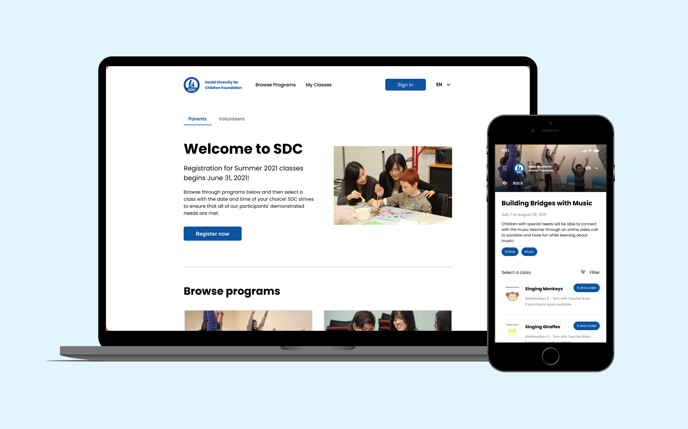
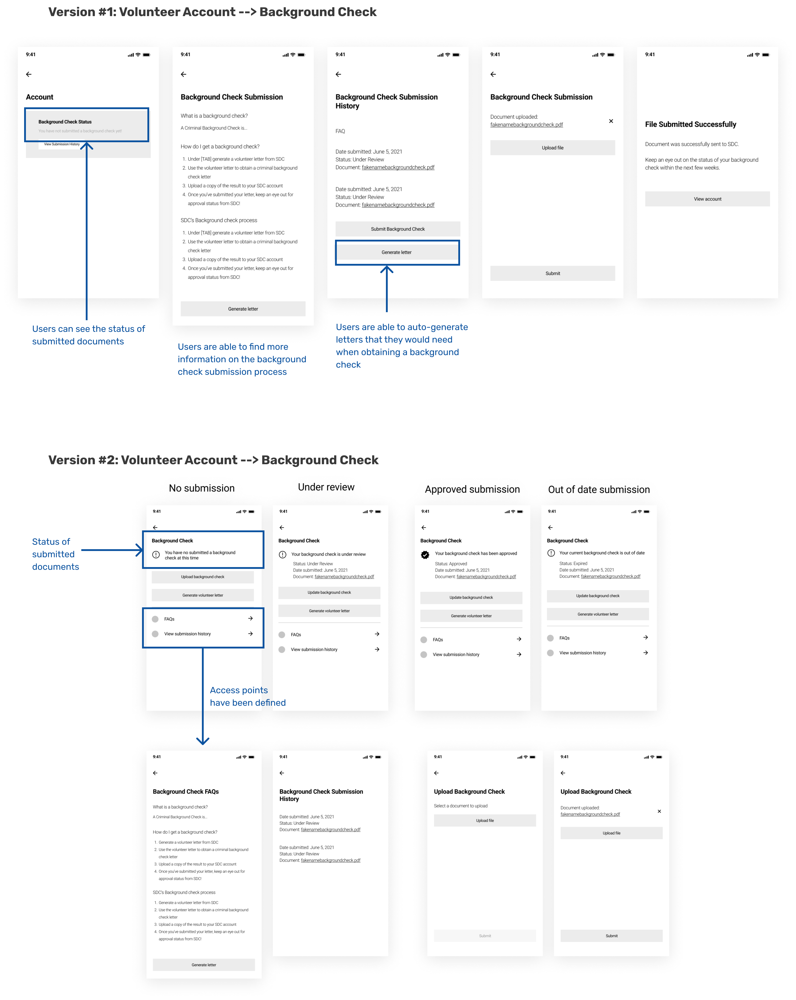

SDC Program Registration Platform
Building Social Diversity for Children Foundation (SDC) a platform to streamline their program registration process for volunteers and parents of kids with disabilities

Context
Since fall 2020, I’ve been volunteering my time on UW Blueprint, a club aiming to make technology accessible to community non-profits without the funding. Each term I’ve got to work on a project team with other students, and each project team works with a non-profit with a need to help build them a solution and equip them with the tools they need.
Last term in spring 2021, UW Blueprint partnered with Social Diversity for Children Foundation (SDC) to build them a tool to simplify and streamline the program and volunteer registration processes. SDC is a non profit that empowers youth to empower children with disabilities through a variety of programs.
Project Details
TEAM: 2 product designers (Christina Ru & I) + 1 product manager + 1 project lead + 6 developers
TIMELINE: May-Aug 2021
MY ROLE: User research, product strategy, interaction & visual design

The process
Understanding the problem
Users
PARENTS
Parents who want to register their kids in the SDC programs
VOLUNTEERS
High school students who want to give back through supporting youth with disabilities, and primarily help through supporting and assisting SDC teachers during programs
SDC PROGRAM COORDINATORS/ADMIN
Staff who would be managing the platform, posting classes
TEACHERS
Staff who teach at the programs and work with youth hands-on
Constraints & requirements
- Multi-language platform (4 languages!)
- Background check & proof of income document upload
- Mobile & desktop friendly
- 1 platform with different access points for different users
Secondary research & discovery session
User interviews were conducted with volunteers and program coordinators/teachers. This led to insightful knowledge and helped squash any assumptions we still had.
After collecting all research and scoping knowledge of users and the problem, we held a discovery session in which we mapped the pain points, opportunities, and goals of each user. This was helpful in ensuring we all had an aligned vision for the product, and reinforcing our knowledge of each users. We also proceeded to map user journeys for each user, to really understand their experience through the processes they encounter.


Ideation
User flows
High level user flows were mapped out so we could get a high level understanding of the product. These flows were also helpful for the developers as well!

Lo-fi Wireframes & User testing
After doing more than 4 different mobile explorations and experimenting with 3 different versions of lo-fidelity designs, we finalized a mobile prototype that we sent to parents & volunteers for user testing. We use Maze, a user-testing platform that allowed us to see how users directly interacted with our prototype. We were able to see many statistics and heat maps from the testing, and were able to get questions we had for them asked within the same platform. The lo-fi designs used in the prototype are shown below.

Iterative Design
The transformation of the main landing page
Iterative design was used for the entire platform, especially after recieving feedback from client meetings, user testing, and design critiques. One page in particular went through many different iterations before arriving at the final design, which I highlight below.
Project status
The designs for the external platform are currently being brought to life by developers!
Designers are collaborating with developers on implementation, with the goal to have the platform shipped and ready for SDC to use by the end of 2021. Come back soon for the live link to the platform!